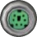
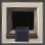

* Časté Zkratky
Obecné pojmy:
- CBS: Challenge Bombs Site (Stránka vyzývavých bomb)
- DBML: Demand-Based Mod Loading (Načítání modů podle nutnosti)
- DMG: Dynamic Mission Generator (Dynamický generátor misí)
- EFM: experting for myself (Expertování pro sebe)
- KTANE/KTaNE/KT&NE: Keep Talking and Nobody Explodes (Název hry)
- LSD: least significant digit (Nejméně významná číslice, stejné jako modulo 10)
- LTP: looking to play (Hledá se hra)
- MSD: most significant digit (Nejvíce významná číslice)
- PR: pull request (Pojem na GitHubu)
- SN/S#: serial number (Sériové číslo)
- TP: Twitch Plays: KTANE (Twitch Hraje: KTaNE)
Názvy modulů:
- 100LOD: 100 Levels of Defusal (zatím nepřeloženo)
- 15ML: 15 Mystic Lights (zatím nepřeloženo)
- 4CM: Four-Card Monte (zatím nepřeloženo)
- 7C4/SCF: Seven Choose Four (zatím nepřeloženo)
- 7DS/SDS: Seven Deadly Sins (zatím nepřeloženo)
- BA/BamA: Bamboozled Again (zatím nepřeloženo)
- BandA: Bandboozled Again (zatím nepřeloženo)
- BB: Bamboozling Button (zatím nepřeloženo)
- BBG: Bamboozling Button Grid (zatím nepřeloženo)
- BC: Big Circle (Velký Kruh)
- BF: Brainf--- (zatím nepřeloženo)
- BH: Black Hole (zatím nepřeloženo)
- BTK: Bamboozling Time Keeper (zatím nepřeloženo)
- BVD: Boolean Venn Diagram (Booleovský Vennův Diagram)
- CDO: Cursed Double-Oh (zatím nepřeloženo)
- CDR: Cruel Digital Root (zatím nepřeloženo)
- CGK: Cruel Garfield Kart (zatím nepřeloženo)
- CGOL/GOLC: Game of Life Cruel (zatím nepřeloženo)
- CPK: Cruel Piano Keys (Kruté Pianové Klávesy)
- DE: Double Expert (zatím nepřeloženo)
- DOMT: The Deck of Many Things (zatím nepřeloženo)
- DR: Digital Root (Ciferace)
- EB: Encryption Bingo (zatím nepřeloženo)
- EM: Encrypted Morse (zatím nepřeloženo)
- FAC: Forget Any Color (zatím nepřeloženo)
- FE: Forget Everything (zatím nepřeloženo)
- FER: Foreign Exchange Rates (Směnárna Cizích Kurzů)
- FI: Forget Infinity (zatím nepřeloženo)
- FIN: Forget It Not (zatím nepřeloženo)
- FML: Forget Me Later (zatím nepřeloženo)
- FMN: Forget Me Not (Nezapomeň Na Mě)
- FMW: Forget Me Now (zatím nepřeloženo)
- FN/FEN: Forget Enigma (zatím nepřeloženo)
- FOV: Forget Our Voices (zatím nepřeloženo)
- FP: Forget Perspective (zatím nepřeloženo)
- FT: Forget This (zatím nepřeloženo)
- FTA: Forget Them All (zatím nepřeloženo)
- FTC: Forget The Colors (zatím nepřeloženo)
- FTL: Follow the Leader (Následuj Vůdce)
- FUN: Forget Us Not (zatím nepřeloženo)
- GD: Geometry Dash (zatím nepřeloženo)
- GOL: Game of Life (zatím nepřeloženo)
- HBN: Hereditary Base Notation (zatím nepřeloženo)
- KYW: Know Your Way (zatím nepřeloženo)
- LC: Lousy Chess (zatím nepřeloženo)
- MAH: Modules Against Humanity (Moduly Proti Lidskosti)
- MM: Mystery Module (zatím nepřeloženo)
- MTC: Monsplode Trading Cards (zatím nepřeloženo)
- OOO: Odd One Out (zatím nepřeloženo)
- RAM: Random Access Memory (zatím nepřeloženo)
- RCL: Railway Cargo Loading (zatím nepřeloženo)
- RP: Robot Programming (zatím nepřeloženo)
- RPN: Reverse Polish Notation (zatím nepřeloženo)
- RPSLS: Rock-Paper-Scissors-Lizard-Spock (Kámen-Nůžky-Papír-Ještěr-Spock)
- SF: Simon Forgets (zatím nepřeloženo)
- SS: Simon’s Stages (zatím nepřeloženo)
- SUS: Simon’s Ultimate Showdown (zatím nepřeloženo)
- TBCC: Ten-Button Color Code (zatím nepřeloženo)
- TIE: Timing is Everything (zatím nepřeloženo)
- TK: The Time Keeper (zatím nepřeloženo)
- TTK: Turn The Key (Otoč Klíčem)
- TTKS: Turn The Keys (Otoč Klíči)
- TTT: Tic Tac Toe (Piškvorky)
- TVAB: The Very Annoying Button (zatím nepřeloženo)
- UCN: Ultimate Custom Night (zatím nepřeloženo)
- UTTT: Ultimate Tic Tac Toe (zatím nepřeloženo)
- WGC: Wolf, Goat, and Cabbage (zatím nepřeloženo)
- WOF: Who’s on First (Kdo je První)
Aditivní míchání barev
Jeden ze dvou hlavních systémů barev obvykle používaných v KTaNE modulech.
Každá barva má 3 komponenty: červený, zelený a modrý komponent. To dělá červenou, zelenou a modrou primárními barvami aditivního míchání barev.
Pokud smícháte zelenou s modrou, dostanete tyrkysovou.
Pokud smícháte červenou s modrou, dostanete purpurovou.
Pokud smícháte červenou s zelenou, dostanete žlutou.
To dělá tyrkysovou, purpurovou a žlutou sekundárními barvami aditivního míchání barev.
Pokud jsou smíchány všechny komponenty (tj. smíchání červené, zelená a modré), dostanete bílou.
Pokud není smíchán žádný komponent, dostanete černou.
Tyto 3 komponenty nemusí být pouze “zapnuty,” nebo “vypnuty.” Například, Odd One Out (zatím nepřeloženo) využívá různé množství, dosahující až 27 barev, místo pouze 8.
Analyzátor logových souborů
Skvělá funkce v Souboru manuálů, která zobrazuje informace z logových souborů lépe graficky a organizovaně.
Barvoslepý režim
- Nastavení, které nějaké moduly podporují, aby je mohly hrát i barvoslepí defuseři. To je většinou dosaženo zobrazením písmen, nebo slov vedle objektů na modulu, jejichž barvy jsou nezbytné pro vyřešení modulu.
- Mod Colorblind Helper (Pomocník pro barvoslepé) může být použit, aby automaticky zapl toto nastavení modulům, které jej podporují.
Baterie
Předmět, který se objevuje v držácích na betrie na straně pouzdra bomby a je tím součástí Edgeworku. Jsou dva typy baterií: AA baterie a D baterie.
- — držák s D baterií
- — držák s dvěma AA bateriemi
Defuseři většinou čtou počet baterií a držáků na baterie místo počtu AA baterií a počtu D baterií. Experti dokáží zjistit počet AA baterií a D baterií z následujících informací:
- Pokud jsou 4 baterie ve 2 držácích, všechny musí být AA baterie.
- Pokud jsou 2 baterie ve 2 držácích, všechny musí být D baterie.
- Pokud jsou 3 baterie ve 2 držácích, musí být 2 AA baterie a 1 D baterie.
Obecně, pokud je b baterií a h držáků na baterie, potom:
- počet AA baterií je 2(b - h) a
- počet D baterií je 2h - b.
mod Multiple Widgets (Více Widgetů) mění předpoklady víše tím, že uvádí držáky na baterie, kde každý obsahuje od 0 do 4 baterií.
Bomba
Může referovat na:
- Předmět ve hře s počtem modulů a tikacím časovačem. Všechny regulární moduly na bombě musí být vyřešeny pro zneškodnění bomby. Normálně je bomba ovládána defuserem a neměl by ho vidět expert(i).
- misi.
- pouzdro bomby.
Boss modul
Regulární modul, který buď představuje nebo generuje nové potřebné informace po každém vyřešení jiného modulu, nebo vyžaduje interakci mezi vyřešením modulů.
Boss moduly se zároveň vyřeší až po vyřešení všech ostatních modulů. Protože bomba může obsahovat více boss modulů, tyhle moduly se navzájem ignorují, aby na sebe nemuseli všechny čekat, což by udělalo bombu nevyřešitelnou. Boss moduly jsou naprogramovány, aby předstíraly, že tyhle ignorované moduly neexistují.
Ujistěte se, že odebíráte mod Boss Module Manager (Správce boss modulů), který kontroluje aktualizace seznamů těchto ignorovaných modulů.
Následující moduly jsou některé nejznámější, které vyžadují vyřešení všech ostatních modulů před ním (kromě ostatních Boss modulů).
Následující moduly, často označené jako Částečné Boss moduly, vyžadují pouze některé ostatní moduly, aby byly vyřešeny před ním, ale většinou ne všechny:
Navíc existuje pár modulů, které nejsou sami Boss moduly, ale jsou na seznamu ignorovaných modulů, kvůli jiným důvodům. Takovéto důvody moho být:
- Těžce záležící na časovači, např. The Time Keeper (zatím nepřeloženo)
- Moduly, které se mohou vyřešit zároveň s jinými, např. Castor (zatím nepřeloženo) a Pollux (zatím nepřeloženo)
Pro kompletní seznam Bossů, Částečných Bossů nebo modulů s různými zvláštnostmi, podívejte se na záložku “Filtry” na hlavní stránce Souboru manuálů. Boss modul bude mít většinou zvláštnosti Vyřeší se na konci nebo Potřebuje vyřešení dalších modulů.
Brožura
Předmět na stole v nastavovací místnosti s nápisem “MODS” (MODY), který vám umožňuje přístup k/ke:
- Správci modů;
- lokální složce obsahující nastavení modů;
- “modovanému manuálu,” automaticky generavonému PDF souboru, obsahujícímu manuály pro všechny nainstalované modované moduly. Seriózní hráči nepoužívají tento velký PDF soubor se stovkami stran, protože je velmi nepraktický. Místo toho využívají Soubor manuálů, který umožňuje přístup k manuálům všech modulů ve hře s možností vyhledávání.
Budík
Hlasitý zvuk, který zabraňuje komunikaci defusera s expertem/expertami, dokud není budík vypnut stisknutím tlačítka “Snooze” (Odložit). Budík se sám po chvíli vypne.
Je to jeden ze stimulačních událostí.
Centurion
Mod (odebírejte zde) vytvořený v roce 2017 jako oslava prvních 100 modovaných modulů. Mod obsahuje:
- pouzdro bomby s maximálním počtem modulů 101;
- obtížnou misi obsahující prvních 99 modovaných modulů, jeden klasický vanilla modul a jeden hlídací modul.
Ciferace
Matematická operace používána některými moduly. Ciferace celého čísla může být spočítáno následovně (dva způsoby):
- Spočítejte součet cifer daného čísla. To dělejte, dokud není výsledek pouze jednociferné číslo.
- Odečtěte od daného čísla 1, vymodulujte ho 9 a přičtěte 1.
- 0 je jediné číslo, jehož ciferace je 0.
- Ciferace všech ostatních čísel je mezi 1 a 9.
- Ciferace se nemění, pokud odděláte všechny devítky z daného číslo. To znamená, že si můžete zjednodušit výpočet tím, že odděláte všechny devítky společně se všemi ciframi, které mají součet 9 (např. 4 a 5). Pokud však odděláte všechny cifry z daného čísla, výsledek bude stále 9, ne 0.
“Clown Car”
Speciální herní výzva, ve které hrají dva nebo více defuserů, kteří zneškodňují odlišné bomby, využívají stejný hlasový kanál a dodatečně sdílejí stejné experty.
Toto je jedna ze speciálních výzev.
Časovač
Tikající časovač na bombě, který zobrazuje, kolik času zbývá na zneškodnění bomby před tím, než vybouchne.
Některé moduly využívají specifické akce (např. stisknutí, nebo držení tlačítka), pokud je čas na časovači roven specifickým cifrám, nebo splňuje jiné podmínky.
Chování časovače je rozdílné, pokud se hraje v Normálním módu, Stálém módu, Časovém módu, nebo Nekonečném módu.
Nad časovačem je malý displej, které zobrazuje až dvě registrované chyby ve formátu symbolu X. To může být upraveno modem Modifikátor časovače bomby, který umožňuje zobrazení přesného počtu chyb, společně s aktivním herním módem.
Časový mód
Herní mód (přístupný skrze Tweaks), ve kterém je časovač modifikován dvěma způsoby:
- Pokud je získána chyba, časovač se nezrychlí, ale místo toho je odebrána část zbývajícího času (většinou 25%).
- Pokud je vyřešen regulární modul, časovači je přidán dodatečný čas. Kolik času je přidáno záleží na obtížnosti vyřešeného modulu. Tím se vrátí čas ze získaných chyb.
- Existuje “násobitel.” S vyšším násobitelem se získá více času za vyřešený modul. Násobitel je ze začátku velký, ale chyby ho velmi rychle snižují. Vyřešený modul ho zvýší, ale velmi málo. Tím jsou chyby stále velmi nákladné a výzva vyřešení modulů spolehlivě je udržována.
Tento mód je využíván při hraní Endurance.
Dále hleďte na: Normální mód, Stálý mód, Nekonečný mód.
Částečně hlídací modul Částečné Needy Pseudo-Needy
Regulární modul, který tvoří risk podobně, jako hlídací modul před tím, než je vyřešen.
Známé příklady částečně hlídacích modulů jsou:
Defuser
Dokument
Složka, která obsahuje nastavení hlasitosti zvuků/hudby, rozlišení obrazovky atd.
Dokument se nachází i v nastavovací místnosti i během hry v herní místnosti.
Držák na baterie
Widget, který obsahuje baterie.
Ve vanille, držák na baterie může obsahovat pouze jednu D baterii, nebo 2 AA baterie.
mod Multiple Widgets (Více Widgetů) uvádí držáky na baterie, kde každý obsahuje od 0 do 4 baterií.
Držák na porty
Typ Widgetu, který může obsahovat 0 až 4 porty.
Mod Více Widgetů přidává držáky na porty, které mohou obsahovat až 13 portů.
Držitelný předmět
Předmět v nastavovací místnosti poskytován modem. Časté příklady jsou Volič modů a Tvůrce bomb.
Kufr vlastní hry, složka misí a brožura jsou také držitelné, ale jsou čistě z vanilly, ne z modu.
Dva faktory
Modovaný Widget (odebírejte zde), který zobrazuje šesticiferné číslo, které se každou minutu mění. Využívá ho velmi málo modulů.
Za jak dlouho se mění lze nastavit v nastavení modů.
Dynamický generátor misí DMG (Dynamic Mission Generator)
Mod (odebírejte zde), který vám umožňuje jednoduše tvořit vlastní bomby přímo ve hře.
To vyžaduje mít nainstalovaný Volič modů, protože DMG využívá ten stejný tablet v nastavovací místnosti.
Navzdory jménu, Dynamický generátor misí netvoří mise, které mohou být v knize misí.
Edgework
Widgety plus sériové číslo na jakékoliv bombě. Většinou se skládá z baterií, indikátorů, portů a sériového čísla. Pokud jsou použity modované Widgety (např. Dva faktory), skládá se i z těch.
Editor profilů
Funkce v Souboru manuálu, která umožňuje hráčům vytvořit profil pro Voliče modů.
Je většinou použit pro tvorbu profilu experta, který naznačuje, s jakými moduly chce expert hrát. Hráč poté stáhne tento profil (soubor .json) a pošle ho defuserovi. Defuser nakonec stáhne soubor do jeho složky profilů s mody a může profil zapnout nebo vypnout ve Voliči modů kdykoliv hraje s daným expertem.
EFM (Experting for myself) Expertování pro sebe
EFM je styl hraní hry, kdy hráč je zároveň defuser i expert. To znamená, že vidí i bombu i manuál.
I přes to, že to není originálním účelem hry, protože to odstraňuje aspekt komunikace, má to přitažlivost, protože řešení modulů v daném čase je stále vyzývavé.
Nezaměňovat si se sólováním. Také podobné s Twitch Hraje: KTaNE.
Endurance
Mód otevřené hry, ve kterém je (potenciálně nekonečná) série bomb, které přijíždí, dokud jedna nevybouchne.
Endurance však vyžaduje, aby byly nainstalovány čtyři mody: Továrna, Více bomb, Tweaks a buď Tvůrce bomb, nebo Dynamický generátor misí (který vyžaduje Voliče modů).
Následovně si nastavte:
-
Časový mód je zapnutý. To znamená, že vyřešení modulu přidá čas na časovači.
- V Dynamickém generátoru misí, syntaxe je
mode:time.
- V Dynamickém generátoru misí, syntaxe je
-
Mód továrny je nastavený na “∞ + global time” (∞ + globální čas). To znamená, že po zneškodnění bomby se objeví nová, ale je zde trest z chyb. Ztracený a rychlejší čas se přenese do další bomby.
- V Dynamickém generátoru misí, syntaxe je
factory:infinitegtimesstrikes.
- V Dynamickém generátoru misí, syntaxe je
Expert
Fonetická abeceda NATO
Abeceda plná klíčových slov, které se využívají při hláskování slov tak, aby šlo vždy rozumnět, jaké písmeno je na mysli.
Následující tabulka ukazuje kompletní hláskovací standard NATO společně s číslicemi, ale v KTaNE komunitě se o číslicích spíše mluví, jako v normální angličtině.
| A | Alfa | N | November (někdy Nancy) | 0 | Zero |
|---|---|---|---|---|---|
| B | Bravo | O | Oscar | 1 | Wun |
| C | Charlie | P | Papa | 2 | Too |
| D | Delta | Q | Quebec | 3 | Tree |
| E | Echo | R | Romeo | 4 | Fow-er |
| F | Foxtrot | S | Sierra (někdy South) | 5 | Fife |
| G | Golf | T | Tango | 6 | Six |
| H | Hotel | U | Uniform (někdy Umbrella) | 7 | Seven |
| I | India (někdy Indigo) | V | Victor | 8 | Ait |
| J | Juliett | W | Whiskey | 9 | Niner |
| K | Kilo | X | X-ray | ||
| L | Lima | Y | Yankee | ||
| M | Mike | Z | Zulu |
GitHub
Webová stránka, na které se nachází zdrojový kód všech manuálů.
Hardcore
Mód hry, ve kterém je maximálně pouze jedna chyba (takže nepovoluje žádné chyby).
Herní místnost
Hlasová bomba
Hlídací modul Needy
Typ modulu, který nemůže být zneškodněn, ale tvoří risk tím, že se periodicky vzbudí a vyžaduje interakci.
Hlídací moduly nejsou nebezpečí po vyřešení všech regulárních modulů na bombě.
Hodinové směry
Běžný způsob komunikace směrů (nebo pozice v kruhovém uspořádání), které spoléhá na pozice cifer na analogových hodinách. V tomto názvosloví, “12” znamená “nahoru,” “3” znamená “doprava” atd.
Porovnání se světovými stranami:
- Tato metoda je obzvláště užitěčná, pokud se pracuje s úhlami 30° nebo 60°. Např. v modulu Hexabludiště, “2 hodiny” je podrobnější popis, než “severovýchod.”
- Tato metoda je bezpečná s předponami, protože žádné hodinové směry nejsou předponami jiných.
Chyba Strike
Referuje na:
-
chybu při pokusu na modulu.
Pokud uděláte chybu, modul produkuje ostrý bzučivý zvuk a rozsvítí červené světýlko na statové kontrolce.
Registrované chyby jsou reprezentovány červeným symbolem X nad časovačem, který ale zobrazí maximálně pouze dvě chyby, takže nemůžete rozlišit, pokud máte dvě, nebo více chyb.
Pokud nevíte, jak jste získali chybu, pro většinu modulů to lze zjistit v logovém souboru.
Některé moduly využívají informace o registrovaných chybách jako součást jejich výpočtu/pravidel.
Chyba může zrychlit časovač.
-
maximální počet chyb, které můžete udělat, aby nevybouchla bomba (poslední chyba bombu vybouchne, např. pokud má bomba maximálně 3 chyby, 3. chyba bombu odbouchne) Většinou je maximálním počtem chyb 3, ale některé mise to snižují na 1 (hleďte na hardcore), zatímco Dynamický generátor misí a Tvůrce bomb umožňují nastavení vlastního počtu maximálních chyb. Vyzývavé mise mají většinou mnohem více chyb.
Indikátor
Widget na straně pouzdra bomby s nápisem a svítící, nebo nesvítící LED.
- — svítící indikátor
- — nesvítící indicator
Vanilla používá pouze indikátory s nápisy BOB, CAR, CLR, FRK, FRQ, IND, MSA, NSA, SIG, SND, a TRN.
Pokud má bomba více než 11 indikátorů, všechny ostatní budou mít nápis NLL.
Interaktivita
Míra, jak moc musí defuser a expert komunikovat mezi sebou, aby vyřešili modul.
Velmi interaktivní modul je takový, u kterého se musí expert opakovaně ptát defusera na informace o modulu.
Typické příklady velmi interaktivních modulů jsou:
- Gridlock (zatím nepřeloženo), kde se musí expert opakovaně ptát na určité informace, protože jinak by bylo až moc informací, které číst naráz;
- Příšerná Paměť, kde každé stisknutí tlačítka generuje nové informace, které musí expert získat;
- Mikroprocesor, kde se musí defuser ptát expertra na odpověď po částech.
Interaktivní moduly vyžadují defuserovu pozornost, což znamená, že většinou zvládne dělat pouze jeden interaktivní modul najednou.
Naopak, neinteraktivní moduly jsou takové, kde může defuser přečíst expertovi všechny informace najednou a expert si sám bude pracovat na řešení. Nakonec přečte expert řešení zpět defuserovi. Jedním příkladem neinteraktivního modulu je Radiátor, nebo Slepá ulička, která ani nevyžaduje žádné informace od defusera, protože lze řešení získat čistě z Edgeworku.
Častá taktika je, že defuser rozdá neinteraktivní moduly všem expertům kromě jednoho a s ním poté dělají nějaký interaktivní modul, zatímco ostatní pracují na svých modulech.
Kancelář
Alternativní název pro nastavovací místnost.
Kongruence
Matematická operace, jejiž výsledkem je zbytek po dělení. Například, “13 modulo 5” jsou 3, protože 13 vydělené 5 jsou 2 se zbytkem 3.
Jiná cesta, jak nad kongruencí přemýšlet je přičítat, nebo odečítat n, dokud není výsledek mezi 0 a n - 1. Například, modulo 5 je to samé, jako přičítání/odečítání 5, dokud není výsledek mezi 0 a 4.
Jiná cesta, jak nad kongruencí přemýšlet je jak daleko je číslo nad násobkem n. Například, 13 modulo 5 jsou 3, protože 13 je o 3 víc, než 10, což je nejbližší nižší násobek 5.
Modulo 10 je to samé, jako vzít cifru na jednotkové pozici.
Kufr vlastní hry
Držitelný předmět v nastavovací místnosti, která defuserovi umožňuje zapnout bombu s učitým počtem modulů a času společně s nastevním zapnout nebo vypnout hlídací moduly a hardcore mód.
Existují dva více použité mody, které umožňují lepší kontrolu a více nastavení:
- Dynamický generátor misí, který umožňuje hráčům kompletně přizpůsobit parametry bomby a moduly, které se na ni ukážou pomocí textové syntaxe. Tento mod vyžaduje mít zároveň nainstalovaný mod Volič modů.
- Tvůrce bomb, další držitelný předmět v nastavovací místnosti s více možnostmi.
Logový soubor
Soubor generovaný hrou obsahující informace o bombě a o modulech na ní. Pro většinu modulů obsahuje informace na modulu a očekávané řešení, umožňující zpětnou kontrolu chyb, pokud jste získali chybu.
Použijte Analyzátor logových souborů pro lehčí čtení logových souborů.
Logový soubor sbírá všechny bomby, které jsou spuštěny v jedné relaci hry. Hra začne po spuštění generovat nový soubor a smaže ten starý.
Za předpokladu výchozího nastavení instalační cesty hry, logový soubor lze nalézt zde:
| Windows/Steam: | %AppData%\..\LocalLow\Steel Crate Games\Keep Talking and Nobody Explodes\output_log.txt |
|---|---|
| Windows/Oculus: | C:\Program Files (x86)\Oculus\Software\steel-crate-games-keep-talking-and-nobody-explodes\Keep Talking and Nobody Explodes\ktane_Data\output_log.txt |
| Mac: | ~/Library/Logs/Unity/Player.log |
| Linux: | ~/.config/unity3d/Steel Crate Games/Keep Talking and Nobody Explodes/Player.log |
| Steam Deck (Proton): | ~/.steam/steam/steamapps/compatdata/341800/pfx/drive_c/users/steamuser/AppData/LocalLow/Steel Crate Games/Keep Talking and Nobody Explodes/output_log.txt |
Mod Klávesové zkratky pro logové soubory může být použit, aby ukázal logový soubor automaticky v Analyzátorovi logových souborů. Klávesová zkratka je výchozím nastavením Shift+F7.
Manuál
Dokument, který vysvětluje:
- jak vyřešit jakýkoliv regulární modul;
- jak operovat hlídací modul;
- jak číst Widget.
Normálně jsou manuály používány expertem a nemají být viděny defuserem.
Některé manuály obsahují přílohy.
Všechny moduly a Widgety mají sepsány manuál jejich autorem. Každopádně, někteří hráči mohli přispět dodatečnými modifikovanými verzemi manuálu, buď přeformulováním vysvětlení, organizací informací více efektivně, nebo zkrátit některé výpočty. Takové dodatečné manuály lze najít v Souboru manuálů kliknutím šipky dolů s nápisem “VÍCE”.
Je pár pojmů používaných k popisu těchto modifikovaných dodatečných manuálů:
-
“vylepšený:” Originální manuál, ale s více informacemi.
- Příklad: Rock-Paper-Scissors-Lizard-Spock (Kámen-Nůžky-Papír-Ještěr-Spock) vylepšený manuál (zatím nepřeloženo) přidává tabulku, které znamení porazí jiné.
-
“přeformulovaný,” “přeorganizovaný:” Stále stejný manuál, ale informace na něm jsou jinak napsané pro lepší čitelnost.
- Příklad: Hunting přeformulovaný manuál (zatím nepřeloženo) přeformulovává vysvětlení a zvětšuje symboly. Tabulka je stále stejná.
- Příklad: Burglar Alarm (Poplašný Alarm) přeorganizovaný manuál (zatím nepřeloženo) přeformulovává vysvětelní a předělává tabulku (řádky jsou sloupce a naopak). Informace jsou stále stejné, jenom v jiném pořadí.
-
“zkrácený:” Manuál, ve kterém jsou pojmy zkrácené až tak, že jsou pro hráče, které nikdy neviděli originální manuál vpodstatě nečitelné. Je pro hráče, kteří znají manuál velmi dobře a pouze ují rychlejší cestu k různým pravidlům nebo instrukcím, které si nepamatují.
- Příklad: Forget Me Not (Nezapomeň Na Mě) zkrácený manuál (zatím nepřeloženo) obsahuje pouze základní kalkulační pravidla a odstraňuje všechno vysvětlení.
-
“optimalizovaný,” nebo “vyhledávací tabulka:” Některé, nebo všechny kalkulace z originálního manuálu jsou již vypočítané a výsledky přímo uvedené. Tento manuál může také odstranit kroky, které jsou netřeba, protože nemění řešení.
- Příklad: Orientační krychle optimalizovaný manuál ulehčuje experta od mentálních 3D rotací krychle a zkracuje modul pouze na určení pravidla z Edgeworku.
-
“interaktivní:” Poskytuje interaktivní manuál pro modul. I přes to, že vypadá jako nějaká aplikace, modul za vás nevyřeší. Místo toho je to digitální ekvivalent papírové predlohy.
- Příklad: Hexabludiště interaktivní manuál simuluje průhlednou šablonu, na kterou lze kreslit a poté se s ní dá pohnou/otočit v manuálu.
-
“automatický řešitel:” Jakýkoliv program, který za vás vyřeší celý, nebo jen část modulu. Soubor manuálů žádné neobsahuje.
- Příklad: Interaktivní demonstrace hry života může být použita pro řešení modulu Jednoduchá hra života a zjednodušuje práci experta na zadání hádanky, stisknutí tlačítka a přečtení odpovědi.
Názory na takové modifikované manuály se velmi liší mezi hráči:
- Někteří hráči preferují hrát pouze s originálními manuály, protože preferují hrát tak, jak to jejich autor zamýšlel a že jiné dodatečné zdroje mohou být brány jako podvod. Kvůli tomu se modifikovaným manuálům někdy říká “taháky.”
- Někteří hráči povolují vylepšené manuály k originálním. Je za tím logika, že expert s tištěnou kopií strany si může psát dodatečné poznámky na prázdné místo na straně.
- Někteří hráči používají jakékoliv manuály, které mohou být tisknuty na rozumné množství papíru. Podobně jako u minulého bodu, takoví hráči by mohli argumentovat, že zkušení experti by mohly tisknout takovou stranu, aby jim zvýšila šanci na zneškodnění bomby a minimalizovala smrti z vybouchnutí. Dále by takoví hráči mohly preferovat optimalizované manuály, které destilují vnitřní hádanky modulu a oddělávají ty vnější.
- Interaktivní manuály jsou častokrát považovány za simulace toho, co by mohl vytvořit expert s fyzickými předměty, jako třeba stříhat papír do tvarů nebo používat smazatelný fix na laminovaném papíru.
- Automatické řešitele se většinou nepřijímají a jsou považovány za negaci celého smyslu hry.
Modeři snějící o vytvoření manuálu pro nový modul mají mnoho možností:
- Můžete si stáhnout šablonu manuálu (ZIP soubor), obsahující všechny důležité soubory. Stačí šablonu přejmenovat a upravit.
- Pokud umíte s gitem, můžete klonovat soubor KtaneContent z GitHubu, udělat kopii existujícího manuálu a upravit ho. Tohle vám také umožňuje předložit váš nový manuál jako “pull request” pro správce webové stránky.
- Pro generaci PDF verze vašeho manuálu, použijte funkci tisku v Google Chromu (Ctrl+P). Ujistěte se, že formát papíru je nastavený na Dopis, protože to je momentální norma pro KTaNE manuály.
Mise
Předvytvořená hra se specifickými moduly, maximálním počtem chyb a počátečním časem na časovači. Vanilla poskytuje mnoho misí obsahující vanilla moduly, ale mody přidávají nové mise. Všechny jsou uvedeny ve složce misí.
Existuje aktivní kompetitivní KTaNE scéna, ve které hráči soutěží o zneškodnění velmi obtížných misí s vyskoým počtem modulů. Žebříčky vypisující výsledky hráčů (pomocí herního časovače) jsou poskytnuty na Stránce vyzývavých bomb.
Mod
Modifikace hry, která většinou přidává nový obsah. Mody jsou k nalezení na Steam Workshopu. Mod může obsahovat:
- moduly (i regulární i hlídací)
- Widgety (např. Dva faktory)
- pouzdro bomby (např. Centurion)
- mise (např. Centurion)
- herní místnost (např. Továrna)
- nastavovací místnost
- držitelné předměty (např. Volič modů, Tvůrce bomb)
- služby (např. Správce hudby, Tweaks)
- zvukové balíčky
Modovací soutěž
Komunitní soutěž, ve které se tvůrci modů snaží udělat modul v limitovaném čase.
Prvně hlasuje komunita o téma, potom se několik dní soutěží a na konci komunita hlasuje pro svého favorita.
Téma modovací soutěže, společně s jejich kandidáty jsou:
- Boozlesnap (zatím nepřeloženo)1. místo
- The Tile Maze (zatím nepřeloženo)2. místo
- Logic Chess (zatím nepřeloženo)3. místo
- The Board Walk (zatím nepřeloženo)
- Candy Land (zatím nepřeloženo) & Cruel Candy Land (zatím nepřeloženo)
- Congkak (zatím nepřeloženo)
- Horsey (zatím nepřeloženo)
- Purchasing Properties (zatím nepřeloženo)
- Shashki (zatím nepřeloženo)
- Shogi Identification (zatím nepřeloženo)
- Shut-the-Box (zatím nepřeloženo)
- Sorry Sliders (zatím nepřeloženo)
- Boomtar The Great (zatím nepřeloženo)1. místo
- Finite Loop (zatím nepřeloženo)2. místo
- Supermassive Black Hole (zatím nepřeloženo)3. místo
- A Square (zatím nepřeloženo)
- Abyss (zatím nepřeloženo)
- Backdoor Hacking (zatím nepřeloženo)
- The Cornflower Button (zatím nepřeloženo)
- Hidden in Plain Sight (zatím nepřeloženo)
- Look, Look Away (zatím nepřeloženo)
- Parallel Mazes (zatím nepřeloženo)
- Steam Selector (zatím nepřeloženo)
- Trajectory (zatím nepřeloženo)
- Anti-Memory (zatím nepřeloženo)1. místo
- Castor (zatím nepřeloženo) & Pollux2. místo (remíza)
- Double-On (zatím nepřeloženo)2. místo (remíza)
- Battle of Wits (zatím nepřeloženo)
- Dual Sequences (zatím nepřeloženo)
- Paperweights (zatím nepřeloženo)
- Parity (zatím nepřeloženo)
- Wave Collapse (zatím nepřeloženo)
- Crazy Maze (zatím nepřeloženo)1. místo
- Technical Keypad (zatím nepřeloženo)2. místo
- Haiku (zatím nepřeloženo)3. místo
- Conditional Maze (zatím nepřeloženo)
- Crazy? (zatím nepřeloženo)
- Four Elements (zatím nepřeloženo)
- The Fuse Box (zatím nepřeloženo)
- Letters and Numbers (zatím nepřeloženo)
- Light Grid (zatím nepřeloženo)
- Navigation Determination (zatím nepřeloženo)
- Run-On Sentence (zatím nepřeloženo)
- Solve Shift (zatím nepřeloženo)
- Swish (zatím nepřeloženo)
- Three Sentence Horror (zatím nepřeloženo)
- Unicode Arrows (zatím nepřeloženo)
Modul
Načítání modů podle nutnosti DMBD (Demand-Based Mod Loading)
Funkce v modu Tweaks, která nenačítá mody po každém spuštění hry, ale místo toho načítá pouze ty, které jsou potřeba při zapnutí bomby.
Pro zapnutí této funkce:
- Načtěte hru, ale použijte Správce modů ve hře a vypněte všechny modované moduly. Ujistěte se, že mody Mod Selector (Volič modů) a Tweaks jsou zapnuté.
- Otevřete tablet Voliče modů, běžte do Nastavení (to ozubené kolečko s nápisem “Settings”), poté do Tweaks, přejděte dolů a zapněte i “Demand-Based Mod Loading” (zapne DMBD) i “Disable Demand-Based Mods” (vypne ze začátku všech mody).
- Po zapnutí těchto dvou nastavení, mod Tweaks by vás měl navést, jak pokračovat.
Nastavení modů
Nastavovací místnost kancelář
Místnost, ve které jste při zapnutí hry. Nezneškodňují se v ní bomby.
Ve Vanille, nastavovací místnost obsahuje následující věci:
- složku misí, umožňující zapnutí mise;
- brožuru, otevírající dveře do světa modů;
- kufr vlastní hry, umožňující volby počtu modulů, chyb a počáteční čas na časovači;
- dokument.
Dodatečné věci, které může nastavovací místnost obsahovat:
- Voliče modů, ve kterém se dají zapnout/vypnout specifické moduly, Widgety, herní místnosti a služby pomocí profilů. Také umožňuje přístup k Dynamickému generátoru misí;
- Tvůrce bomb, pokročilá verze kufru vlastní hry.
Ve Vanille, nastavovací místnost vypadá jako kancelář. Různé mody mění nastavovací místnost.
Nekonečný mód
Herní mód (přístupný skrze Tweaks), ve kterém tiká časovač nahoru, ne dolů. Dodatečně není žádný limit chyb, takže bomba nikdy nevybouchne.
Pokud se využívá v Twitch Hraje: KTaNE, tento mód také drasticky snižuje počet bodů za vyřešení regulárního modulu.
Tento mód je užitečný při učení se, nebo trénování nového modulu.
Také hleďte na: Normální mód, Stálý mód, Časový mód.
Nevyřešený modul
Regulární modul na bombě, který zatím nebyl vyřešen.
Některé manuály referují na počet nevyřešených modulů (nebo vyřešených modulů) jako součást jejich výpočtu/pravidla. V těchto případech se hlídací moduly nepočítají.
Normální mód
Referuje na originální herní mód, ve kterém odpočítává časovač, který vybouchne bombu, pokud dosáhne nuly.
V tomto módu se časovač zrychluje podle počtu chyb:
- 1 chyba: 1.25× zrychlení (1 sekunda na časovači je nyní 0.8 skutečných sekund)
- 2 chyby: 1.5× zrychlení (1 sekunda na časovači je nyní 0.67 skutečných sekund)
- 3 chyby: 1.75× zrychlení (1 sekunda na časovači je nyní 0.57 skutečných sekund)
- ≥ 4 chyby: 2× zrychlení (1 sekunda na časovači je nyní 0.5 skutečných sekund)
Porovnání s různými módy dostupné v Tweaks:
Odhalovač profilů
Mod (odebírejte zde), který zobrazuje v jakém profilu jsou zapnuty dané moduly na bombě tím, že přes ně najedete myší. Je to velmi užitečné, pokud se hraje s profily expertů tak, aby defuser věděl, čí profil obsahuje daný modul.
Tento mod může také obsahovat jména daného modulu, což může být pomocné v hraní a učení se modulů, ale v kompetitivní hře je to považováno za neférovou výhodu a diskvalifikuje váš pokus na Stránce vyzývavých bomb.
Port
Předměty, které se objevují v držácích na porty.
Ve vanille se nacházejí následující porty:
 — Paralelní
— Paralelní — Sériový
— Sériový — DVI-D
— DVI-D-  — PS/2
-  — RJ-45
 — Stereo RCA
— Stereo RCA
Ty mohou být seskupeny následovně podle držáků na porty:
- — Paralelní a sériový
- — DVI-D, PS/2, RJ-45 a Stereo RCA
Mod Více Widgetů přidává následují porty: AC, USB, VGA, PCMCIA, Komponentní video, Kompozitní video, a HDMI. Také umožňuje všem portům, aby byly seskupeny spolu na jeden držák na porty.
Pouzdro bomby
Prázdný držák na porty
Držák na porty, který nemá žádné porty:
Profil
Soubor, který může být vytvořen ve Voliči modů, nebo v Editoru profilů, který je využíván pro výběr modulů, se kterými si přejete hrát:
- Abyste hráli s moduly, které váš expert umí, použijte jeho profil experta. Většinou si každý expert dělá profil v Editoru profilů, který pošle defuserovi. Defuser soubor stáhne do jeho složky profilů s mody a zapne jej ve Voliči modů.
- Pro vypnutí nějakého modulu, Widgetu, pouzdra bomby, herní místnosti nebo služby, se kterými nechce defuser hrát, vytvoří si profil defusera. Ten má větší prioritu před profilem experta.
Profil defusera veto profil
Typ profilu ve Voliči modů, který umožňuje vetovat (vypnout) specifické moduly, Widgety, pouzdra bomby nebo služby.
Obvykle používané pro vypnutí modů, které defuser nechce hrát.
Oproti profilu experta, profil defusera má větší prioritu před profilem experta.
Profil experta
Typ profilu ve Voliči modů, který se používá k zahrnutí modulů.
Obvykle používané pro zahrnutí modulů, které daný expert zná, umí a chce hrát.
Oproti profilu defusera, profil defusera má větší prioritu před profilem experta.
Profilová bomba
bomba, ve které jsou moduly vybrány z profilu experta.
Ty jsou generovány přes Dynamický generátor misí pomocí syntaxe jako:
5*profile:Mickey 5*profile:Brian 1*profile:Solos
V tomto případě hra vybere 5 modulů z Mickeyho profilu, 5 z Brianovo a 1 ze sólo profilu, který si defuser vytvořil pro sebe. Všechny tři profily musí být staženy na počítači defusera.
Přílohy
- V manuálech vanilly: několik stran na konci manuálu, které popisují, jak číst Widgety. Nekolik manuálů na moduly na to odkazují.
- Ve světě modů, příloha je dodatečná stránka, která je stále součástí manuálu na daný modul, ale není nutně použitelný pro jeho vyřešení. Většinou popisují detaily, které by pro některé čtenáře mohly být nepovědomé, jako například logické operátory, řada čísel (např. prvočísla), pravidla míchání barev atd.
Pull request PR
Navržená změna ke složce na GitHubu. Autor složky si může vybrat jestli potvrdí, nebo zamítne návrh. Protože mody jsou častokrát umístěny na GitHubu, Pull requesty jsou často využívané, aby přidaly funkce (jako třeba podpora Twitch Hraje: KTaNE). Pull Requesty se také využívají, aby přidaly nové manuály, nebo jiné soubory nebo funkce do Souboru manuálů.
Regulární modul řešitelný module
Modul, který musí být vyřešen, aby jste zneškodnili bombu.
také hleďte na: Boss modul, hlídací modul.
Rule seed
Číslo, které dynamicky mění manuály a pravidla modulů.
Toto vyžaduje mod Modifikátor Rule seedu (odebírejte zde).
Abyste to viděli v akci, porovnejte tyto dvě verze manuálu modulu Heslo:
- klasický manuál modulu Hesla (zobrazuje známé hádanky)
- manuál modulu Hesla s rule seedem 2 (stejná hádanka, ale různé slova)
Pokud je Rule seed jiný, než ten výchozí, na bombu se přidá Widget ukazující nastavený Rule seed.
Defuser and experti musí souhlasit z Rule seedem:
- pokud používáte Dynamický generátor misí, syntaxe je
ruleseed:47, neboruleseed:random. - pokud používáte Tvůrce bomb, hráč může nastavit Rule seed manuálně, nebo vybrat náhodně držením klávesy “S” po dobu několika sekund.
Expert musí použít správný manuál, který využívá stejný Rule seed, jako defuser. Soubor manuálů umožňuje jednoduché vložení Rule seedu, který se potom automaticky použije na všechny manuály.
Všechny Vanilla regulární moduly, stejně jako hlídací Knoflík jej podporují, stejně jako mnoho modovaných modulů.
Výchozí Rule seed je 1. Použití toho Rule seedu poskytne všech známé “klasické” manuály.
Seed
Číslo, které:
- dynamicky mění pravidla modulů — hleďte na Rule seed;
- Umožňuje hráčům zažít stejnou bombu (stejné moduly se stejným řešením). Pro Dynamický generátor misí je syntaxe
missionseed:47. Alternativně se to může nastavit pomocí modu Soutěživý mód.
Obecně v programování, slovo “seed” referuje na číslo, které nastaví náhodný generátor čísel tak, že pokaždé vygeneruje stejná čísla.
Sériové číslo
Kód písmen a čísel na straně pouzdra bomby. Většina modulů mají pravidla, u kterých záleží na sériovém čísle.
Sériové číslo má pár pevných vlastností:
- Je to vždy šestimístný kód z písmen od A do Z a číslic od 0 do 9.
- Třetí a šestý znak je vždy číslice.
- Čtvrtý a pátý znak je vždy písmeno.
- Pokud do toho nevstupují mody, písmeno O ani Y se neobjevují. Číslice 0 však ano. V době psaní tohoto glosáře berou všechny moduly Y jako souhlásku, kromě modulu Vaření, který má poznámku, která tohle přímo říká.
- Číslice 0 je sudá.
Sériové číslo je součástí Edgeworku.
Shadowování
Pracovat (jako expert) na vyřešení regulárního modulu, zatímco na něm už pracuje jiný expert.
Používáno jako sloveso, např. “Budu tě shadowovat u Sousedících písmen.”
Většinou se to děje v případě, že už jsou vyřešeny všechny ostatní moduly na bombě, takže není co jiného dělat.
Pokud je málo času na bombě, shadowovací expert může najít řešení rychle, aby se stihla bomba zneškodnit. Pokud nezbývají žádné chyby navíc, shadowovací expert může potvrdit řešení, aby zvýšil šanci na vyřešení modulu.
Také se používá, pokud se expert učí nový modul za běhu.
Složka soubor
Může referovat na:
- Soubor manuálů
- Určitá složka na GitHubu obsahující zdrojový kód KTaNE modů. Většina modů mají svůj zdrojový kód zveřejněn a to na GitHubu.
Složka misí
Držitelný předmět uprostřed stolu v nastavovací místnosti s nápisem “BOMBY,” poskytující hráčům zapnout mise (vanilla nebo modované).
Složka profilů s mody
Složka, která obsahuje profily používány Voličem modů.
Pro otevření složky přímo ze hry, klikněte na tlačítko “Open Mod Profiles Folder” (otevřít složku profilů s mody). Mimo hru můžete složku otevřít následovně:
| Windows: | %APPDATA%\..\LocalLow\Steel Crate Games\Keep Talking and Nobody Explodes\ModProfiles |
|---|---|
| Mac: | ~/Library/Application Support/com.steelcrategames.keeptalkingandnobodyexplodes/ModProfiles |
| Linux: | ~/.config/unity3d/Steel Crate Games/Keep Talking and Nobody Explodes/ModProfiles |
| Steam Deck (Proton): | ~/.local/share/Steam/steamapps/compatdata/341800/pfx/drive_c/users/steamuser/AppData/LocalLow/Steel Crate Games/Keep Talking and Nobody Explodes/ModProfiles |
Služba
Mod, který modifikuje chování hry jinak, než přídavek nových modulů, Widgetů, pouzder bomb, herních místností, nastavovacích místností, zvukových balíčků nebo držitelných předmětů.
Známé služební mody jsou např. Více bomb, Tweaks a Správce hudby.
I přes to, že se Továrna bere jako herní místnost, teoreticky také obsahuje službu vylepšujicí Více bomb, Tvůrce bomb a Dynamický generátor misí.
Sólo
Vyřešit regulární modul jako defuser bez nakouknutí do manuálu (z paměti).
Používáno jako sloveso, např. “Sóloval jsem Anagramy.”
Nezaměňovat s EFM.
Soubor manuálů
Webová stránka na adrese ktane.timwi.de.
Tato webová stránka obsahuje všechny manuály pro KTaNE moduly a Widgety, společně s Editorem profilu a Analyzátorem logových souborů.
O změny na stránce můžete žádat pomocí pull requestů na GitHubu:
- KtaneContent - Obsahuje všechny manuály, Editor profilu, Analyzátor logových souborů a další statické soubory na serveru.
- KtaneWeb - Obsahuje kód v C#, na kterém běží celá stránka.
Soutěživý Mód
Mod (odebírejte zde), který vám umožňuje mít více defuserů, kteří prožívají úplně stejnou bombu (stejné moduly se stejným řešením).
Toto umožňuje týmům závodit proti sobě v rovnocenných podmínkách. Bez tohoto modu by mohl mít nějaký tým štěstí a dostat lehčí řešení na modulech než ostatní týmy.
Už to ale není běžně používané běžnými hráči. Soutěživá scéna v KTANE místo toho využívá stupeň náhody ve hře při závodu o čas pro dokončení mise.
Pro více informací o momentální soutěživé scéně, hleďte na Stránku vyzývavých bomb.
Správce hudby
Mod (odebírejte zde), který vám umožňuje vybrat vlastní hudbu do pozadí hry.
Správce modů
Funkce hry, která hráčům umožňuje prohlížet, odebírat, zapnout a vypnout mody. Pokud jsou mody nainstalovány, Správce modů se objeví při spuštění hry, ale může být také spřístupněn přes brožuru v nastavovací místnosti.
Stálý mód
Herní mód (přístupný skrze Tweaks), ve kterém se časovač nezrychluje po zisku chyby. Místo toho se odečte nějaký stálý počet času (většinou 2 minuty).
Tento mód se může hodit při klidném zneškodňování velkých bomb a/nebo u těžkých misí, ale není povolen u kompetitivního hraní na Stránce vyzývavých bomb.
Hleďte také na: Normální mód, Časový mód, Nekonečný mód.
Statová kontrolka
Malá žárovka, nebo LED na regulárním modulu, většinou v pravém horním rohu.
Kontrolka je ze začátku tmavě šedá, což značí, že modul není vyřešený. Pokud je vyřešen, kontrolka je světle zelená.
Pokud se na modulu stala chyba, na chvíli blikne červeně.
Je pár modovaných modulů, které mění toto chování. Některé moduly mají statovou kontrolku v jiném rohu, zatímco jiné využívají jiné barvy, aby naznačili, jestli jsou vyřešeny, nebo ne.
Steam Workshop Workshop
Pokud některý moder udělá mod, často ho vydá na Workshop, ale nechají ho viditelné pouze pro přátele, aby ho vyzkoušeli před tím, než se vydá veřejnosti. V tomto případě se ujistěte, že jste příhlášeni na webovou stránku Steam, abyste mohly hrát s těmito neveřejnými mody.
Stimulační událost
Stránka vyzývavých bomb CBS (Challenge Bomb Site)
Webová stránka na adrese bombs.samfun.dev.
Aktivní soutěživá KTaNE scéna, skládající se převážně ze zneškodňování obtížných misí a soutěžení o nejlepší zbývající čas na herním časovači.
Celá sbírka potvrzených misí společně s jejich žebříčky jsou k nalezení na této webové stránce, což je také místo, kde se nacházejí nové mise a úspěšné pokusy. Doporučejeme se podívat na pravidla vyzývavých bomb..
Úspěšná zneškodnění se rozdělují do různých kategorií:
- Normální, ve kterém defuser vidí bombu a ne manuály, zatímco jeden, nebo více expertů vidí manuály a ne bombu.
- EFM, ve kterém jediný hráč vidí i bombu i manuály.
- Twitch Hraje, ve kterém tým hráčů používají příkazy v chatovacím kanále na platformě Twitch, aby ovládali bombu.
- Sólo, ve kterém jediný hráč vidí pouze bombu. Tohle je velmi vzácné, protože to vyžaduje, aby si hráč pamatoval všechny relevantní manuály.
Světové strany
Běžný způsob ke komunikaci se stranami (nebo pozicemi v mřížkovém rozpoložení), který využívá nápisy větrné (kompasové) růžice. V tomto názvosloví “sever” znamená “nahoru,” “východ” znamená “doprava,” “jih” znamená "dolu" a “západ” znamená “doleva.”
Porovnání s hodinovými směry:
- Tato metoda je obzvláště užitečná, pokud se pracuje s úhlami 45°. Např. v modulu Námořní signalizace, “severovýchod” je podrobný popis, zatímco “1 hodina” nebo “2 hodiny” může způsobit zmatek.
- Tato metoda není “bezpečná,” protože jsou směry (např. “sever”), které jsou předpony jiných (např. “severovýchod”). Může dojít k tomu, že expert řekne “severovýchod,” ale může mu být rozumět pouze “sever” (např. se mu může sekat mikrofon, internet, může koktat atd.)
Továrna
Herní místnost (odebírejte zde), která přidává dodatečné funkce do hry.
Skvělá funkce přidaná Továrnou je schopnost hrát několik bomb po sobě (nová bomba se objeví po zneškodnění jiné). Ta ale vyžaduje navíc mody Více bomb a buď Dynamický generátor misí, nebo Tvůrce bomb.
Hleďte na Endurance.
Tvůrce bomb
Modovaný držitelný předmět (odebírejte zde), který funguje podobně, jako kufr vlastní hry, obsahující více možností pro přizpůsobitelnost.
Konkrétně umožňuje přístup k funkcím Více bomb a Továrna, jako třeba nekonečně mnoho bomb (používáno v Endurance).
Také umožňuje nastavení Rule seedu.
Tweaks
Mod (odebírejte zde), který přidává následující funcke do hry:
- Načítání modů podle nutnosti
- Lepší vybírač pouzder: ujisťuje, že nedostanete velké pouzdra bomb, pokud hrajete s malým počtem modulů.
- Displej Edgeworku: Displej v horní části obrazovky, který zobrazuje Edgework ve formátu textu.
- Stálý mód, Časový mód a Nekonečný mód.
- Provádí malé úpravy na některé modované moduly, jejichž autoři nemají přístup je opravit.
Twitch Hraje: KTaNE Twitch Hraje TP (Twitch Plays)
Způsob hraní Keep Talking and Nobody Explodes na živém vysílání na platformě Twitch tím, že mají diváci přístup k mnoha příkazům, které potom automaticky ovládají hru místo člověka.
Protože hráči vidí i moduly i manuály, je to považováno za speciální formu EFM.
Chcete-li najít populární streamy Twitch Hraje: KTaNE, můžete se připojit na Twitch Hraje: KTaNE Discord server.
Hráči získávají body za vyřešení regularárních modulů a údržbu hlídacích modulů, stoupající v žebříčku.
Pokud chcete spustit stream sami, získejte kopii z nejnovější verze na GitHubu.
Unicorn
Vanilla
Referuje na:
- Základní hru bez žádných nainstalovaných nebo zapnutých modů. Základní hra obsahuje 11 regulárních modulů, 3 hlídací moduly a služné množství misí.
- Styl hry, kdy se hraje pouze s Vanilla (nemodovanýma) modulama i když jsou zapnuty mody jako pouzdra na bomby nebo Tvůrce bomb pro zvýšení počtu modulů, Widgetů nebo chyb.
Vetovací profil
Jiný název pro profil defusera.
Více bomb
Mod (odebírejte zde), který umožňuje hráči hrát více bomb na jednou.
Hrací místnost ve Vanille, která umožňuje až dvě bomby naráz. Hrací místnost Portal umožňuje až 4. Továrna umožňuje daleko více a to až 48 naráz, nebo v řadě (v řadě až nekonečno).
Volič modů
Modovaný držitelný předmět (odebírejte zde), který vypadá jako tablet a je na stole v nastavovací místnosti.
Umožňuje hráči, společně s jinými věcmi, zapnout, nebo vypnout různé prvky hry:
- Pro hraní s moduly, které váš expert umí, použijte jeho profil. Experti většinou používají Editor profilů pro vytvoření jejich profilu, který pošlou defuserovi. Defuser je stáhne do složky profilů s mody a zapne je ve Voliči modů.
- Pro vypnutí modulů, Widgetů, pouzder bomb, hracích místností a služeb, se kterými defuser nechce hrát, může si vytvořit profil defusera. Ty mají přednost před profily experta.
- Z tabletu můžete také využít Dynamický generátor misí, společně se záložkou nastavení modů od Tweaks.
Vybouchnout explodovat
Když bomba vybouchne, hráč prohrál hru. Jsou dva důvody, proč by bomba mohla vybouchnout. Dokument, který se objeví na obrazovce po vybouchnutí popisuje “Důvod exploze”:
- Pokud je důvodem “Čas vypršel,” časovač na bombě vypršel před tím, než tým vyřešil všechny regulární moduly na bombě.
- Pokud ne, důvodem bude název modulu. Bomba vybouchla, protože maximální počet chyb byl dosažen a poslední chybou (tou, kvůli které bomba vybouchla) byl modul zobrazen jako důvod. Je možné, že to nebyl modul, se kterým jste přímo interagovali. Obzvláště, jestli to byl hlídací modul.
Vyřešený modul
Regulární modul na bombě, který byl vyřešen.
Některé manuály referují na počet vyřešených modulů (nebo nevyřešených modulů) jako součást jejich výpočtu/pravidel. V těchto pípadech se hlídací moduly nepočítají.
Vyřešit zneškodnit
- Úspěšně dokončit regulární modul. Dokončení regulárního modulu je většinou značeno rozsvícením statové kontrolky.
- Zneškodnit bombu.
Výtah výtahová místnost
Herní místnost, která je teoreticky ve Vanille, ale má speciální status:
- Bez modů, tato herní místnost je pouze dostupná ve VR (virtuální realita).
- Mod Pohybovatelná kamera vám umožní hrát v této herní místnosti i bez virtuální reality.
- Tato herní místnost je také hratelná v Twitch Hraje: KTaNE.
Výzva ano/ne
Speciální herní výzva, ve které může jeden hráč (většinou defuser) říkat pouze “ano” nebo “ne,” takže se musí ostatní hráči (většinou experti) ptát strategicky na správné otázky.
Je to jedna ze speciálních výzev.
Výzva manuálů
Komunitní výzva, ve které autor nějakého modu vydá modul bez manuálu. Komunita se na tento modul podívá a zjišťuje, jaké jsou pro něj pravidla a sepíše pro něj manuál. Poté, co se na správné pravidla přijde, modul se stane normálním modulem s manuálem.
Minulé výzvy manuálů byly v chronologickém pořadí:
- Další v pořadí
- Pí
- The Cube (zatím nepřeloženo)
- Spinning Buttons (zatím nepřeloženo)
- Alchemy (zatím nepřeloženo)
- Flavor Text EX (zatím nepřeloženo)
- Digital Cipher (zatím nepřeloženo)
- Stack’em (zatím nepřeloženo)
- Unown Cipher (zatím nepřeloženo)
- Odd One Out (zatím nepřeloženo)
- Green Cipher (zatím nepřeloženo)
- The Hyperlink (zatím nepřeloženo)
- Polygons (zatím nepřeloženo)
- Multicolored Switches (zatím nepřeloženo)
- 14 (zatím nepřeloženo)
- Dreamcipher (zatím nepřeloženo)
- Audio Morse (zatím nepřeloženo)
- Yes and No (zatím nepřeloženo)
- Etterna (zatím nepřeloženo)
- Integer Trees (zatím nepřeloženo)
- Goofy’s Game (zatím nepřeloženo)
- Puzzword (zatím nepřeloženo)
- int## (zatím nepřeloženo)
- ASCII Maze (zatím nepřeloženo)
- Three Cryptic Steps (zatím nepřeloženo)
- Pocket Planes (zatím nepřeloženo)
- Cosmic (zatím nepřeloženo)
- Validation (zatím nepřeloženo)
- Linq (zatím nepřeloženo)
- X (zatím nepřeloženo) a Y (zatím nepřeloženo)
- Pointless Machines (zatím nepřeloženo)
- Inselectables (zatím nepřeloženo)
- Hypermatch (zatím nepřeloženo)(před vyřešením referováno jako “Hypervýzva”)
- Faerie Fires (zatím nepřeloženo)
- Wumbo (zatím nepřeloženo)
- Wander (zatím nepřeloženo)
- Holographic Memory (zatím nepřeloženo)
- Shapes and Colors (zatím nepřeloženo)
- Nonagon Infinity (zatím nepřeloženo)
Výzvy
Kromě normálního významu slova “výzva,” v KTaNE může referovat na:
-
(také: vyzývavá bomba) Misi, o kterou hráči soutěží, kdo ji zněškodní za co nejlepší zbývající čas v herním časovači. Takové vyzývavé mise, společně s jejich žebříčky, jsou uvedeny na Stránce vyzývavých bomb.
- Výzva manuálů.
-
(také: speciální výzva) Herní mód, který je speciálně omezený, aby do hry přidal nějakou výzvu. Některé takové výzvy jsou například:
Whitelist
Typ streamu Twitch Hraje, kde jsou všichni hráči, kteří ovládají bombu, vybraní před zapnutím streamu. Obecně, whitelist hráči jsou častými hráči Twitch Hraje, kteří jsou velmi dobří. Většina vyzývavých bomb jsou pokoušena ve whitelist streamu. Pokud si přejete stát se členy whitelist streamů, můžete si zažádat na Twitch Plays Discord serveru.
Widget
Cokoliv, co je na stranách bomby, s výjimkou sériového čísla; ovlivňuje většinu modulů. Vanilla hra vždy využívá na bombě 5 Widgetů, ale to se dá změnit pomocí Tvůrce bomb.
3 typy Widgetů ve Vanille jsou:
Workshop
Zkratka pro Steam Workshop.
Zneškodnit vyřešit
- Úspěšně dokončit bombu vyřešením všech regulárních modulů, které osabuje, před vypršením časovače.
- (neobvyklé) vyřešit regulární modul.
Zvláštnost
Některé moduly mají speciální vlastnosti zvané zvláštnosti, které mění jak nebo v jakém pořadí musí být moduly vyřešeny. Některé moduly také interagují s ostatními moduly, nebo vyžadují jejich přednost.
Seznam možných zvláštností:
- Vyřeší se na konci: Modul je pouze řešitelný až po VŠECH ostatních neignorovaných* modulech (na konci bomby). Obecně mají tuto zvláštnost Boss moduly a všechny Boss moduly by měli ignorovat moduly s touto zvláštností. (Např. Nezapomeň na mě)
- Potřebuje vyřešení dalších modulů: Modul se nedá vyřešit dokud pár, ale ne povinně všechny, ostatní neignorované* regulární moduly jsou vyřešeny prvně. Obecně, částeční bossové mají tuto zvláštnost a ignorují ostatní moduly s touto zvláštností. (Např. Divided Squares (zatím nepřeloženo))
- Musí být vyřešen před některými jinými: Modul musí být vyřešen před některými jinými neignorovanými* moduly. Obecně by se měli všechny moduly s touto zvláštností ignorovat. (Např. Otoč Klíči)
- Může se vyřešit s jinými: Modul se může vyřešit sám hned po vyřešení jiného modulu. (Např. Castor (zatím nepřeloženo) a Pollux (zatím nepřeloženo))
- Náhle se vyřeší: Modul náhle představí malý prostor času, ve kterém se vyřeší, i když byla zadána špatná odpověď, nebo byly generovány chyby. (Např. The Heart (zatím nepřeloženo))
- Částečně hlídací modul: Modul staví risk, podobně jako hlídací modul před tím, než může být vyřešen. (Např. The Swan (zatím nepřeloženo))
- Těžce závislý na čase: Modul má velmi přesné podmínky časování a může být vyřešen pouze ve specifický čas. (Např. Otoč Klíčem)
- Potřebuje okamžitou pozornost: Modul musí být vyřešen, nebo je o hodně jednodušší na vyřešení během krátké chvíle na začátku bomby. (Např. Tax Returns (zatím nepřeloženo))
- Okamžitá smrt: Modul může v určitých okolností ukončit bombu například tím, že ji okamžitě odbouchne, nebo vypne celou hru. (Např. Monsplode, Bojuj!)
* Moduly, které mají nějaké z těchto zvláštností se navzájem často ignorují pomocí ignorovacího seznamu, aby se ujistilo, že na sebe budou čekat moduly se stejnými zvláštnostmi, což by udělalo bombu nevyřešitelnou.
Zvukový balíček
Mod, který modifikuje zvuky ve hře, např. zvuk chyby, vybouchnutí, budíku a další.
Tohle neobsahuje hudbu do pozadí. Na to slouží mod Správce hudby.
Zvýrazňovač
Funkce v Souboru manuálů, která umožňuje zvýraznění buňek, sloupců a řádků v tabulkách HTML manuálů pomocí klávesových zkratek.
| Zvýraznit sloupec v tabulce | Ctrl+Klik (Windows) Command+Klik (Mac) |
|---|---|
| Zvýraznit řádek v tabulce | Shift+Klik |
| Zvýraznit buňku v tabulce nebo položku v seznamu | Alt+Klik (Windows) Ctrl+Shift+Klik (Windows) Command+Shift+Klik (Mac) |
| Změnit barvu zvýrazňovače | Alt+0, Alt+1, Alt+2, atd. až do Alt+9 |
| Zobrazit dodatečné nastavení | Alt+O |
Žebříčky
Jsou tři různé typy žebříčků:
- Stránka vyzývavých bomb spravuje žebříčky určitých misí. Je to to, co aktivní kompetitvní KTaNE scéna považuje za oficiální platformu světových rekordů.
- Hra spravuje žebříčky pro každou misi, včetně těch modovaných pomocí Steam jména defusera. Kompetitivní scéna KTaNE je nepoužívá.
- Twitch Hraje: KTaNE spravuje jiný typ žebříčků. Tyhle žebříčky obsahují Twitch jména hráčů a skóre jsou body, které jsou získány řešením regulárních modulů. Každý streamer má svůj vlastní žebříček.